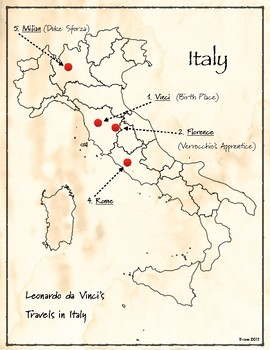
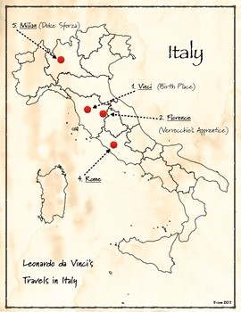
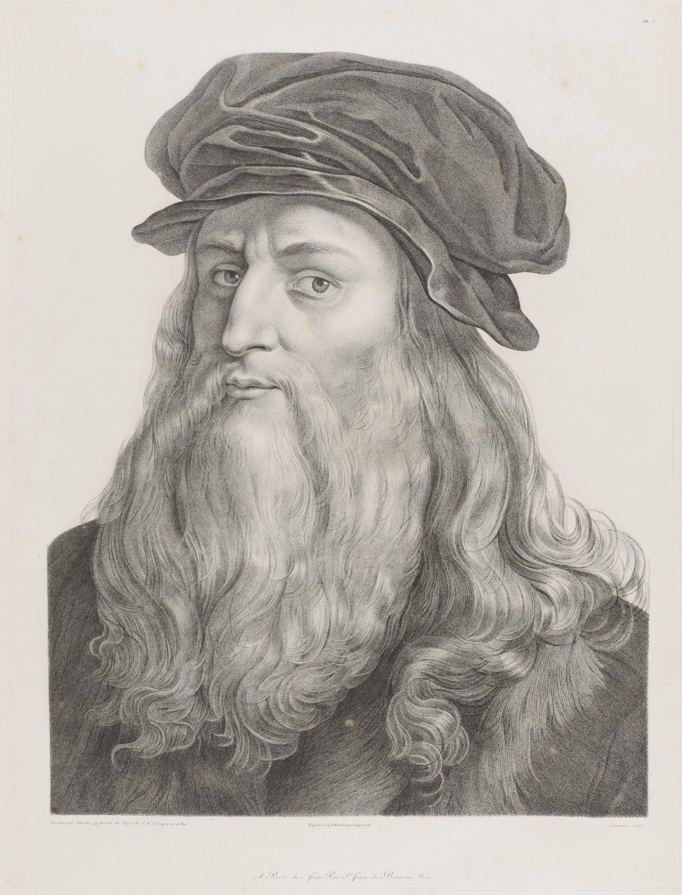

It is time to prepare and present your travel plan to Vinci.
Take into account everything you have learnt before.
Three, two, one… get ready!

It is time to prepare and present your travel plan to Vinci.
Take into account everything you have learnt before.
Three, two, one… get ready!
Now it’s time to plan your trip to Vinci. You will work in small groups. Remember you have a budget of €600 per student. Prepare your oral presentation and convince your classmates to join the trip. Follow these steps:



You are almost there. Go for it!
In this last step, I am going to ask you to think about what has been the most important thing you have learnt in order to achieve the challenge.
What you discover by thinking, will help you when you have to meet similar challenges in the future.
Stop for a moment and complete STEP 4 of your Learning Journal (What have I learned?).
Remember:
- Ask your teacher whether you will fill it in on paper or on the computer.
- If you fill it in on the computer, don't forget to save it on your computer when you finish it!
Cheer up, you'll do great!
En este último paso te voy a proponer que pienses en qué ha sido lo más importante de todo lo que has aprendido para conseguir el reto que te proponíamos.
Lo que descubras pensando en ello te servirá para cuando tengas que alcanzar retos parecidos en un futuro.
Para un momento y completa el PASO 4 de tu Diario de aprendizaje (¿Qué he aprendido?).
Recuerda:
• Pregunta a tu profesor o profesora si rellenarás la ficha en papel o en el ordenador.
• Si la rellenas en el ordenador, ¡no te olvides de guardarla en tu ordenador cuando la termines!
¡Ánimo, que lo harás genial!
Obra publicada con Licencia Creative Commons Reconocimiento Compartir igual 4.0